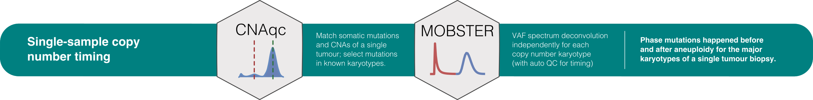

The following data are required to run this pipeline.
mutations;cna;purity;karyotypes of shorthands (in Major:minor notation) for karyotypes that should be used to perform subclonal deconvolution.
c('2:0', '2:1', '2:2') are used;min_VAF;min_muts) and maximum (N_max) for the number of mutations to analyse;description;The input format of input data is discussed in a CNAqc vignette..
The following steps are performed by pipeline_chromosome_timing.
input mutations are mapped to copy number segments, integrating also tumour purity using CNAqc;
input mutations are subset according to the required input list of karyotypes; mutations that map to karyotypes with less than the required number of mutations (pipeline input), are disregarded by the analysis.
MOBSTER is used to perform deconvolution from raw VAF data of each karyotype; the following procedure is followed for each karyotype:
a first run of mobster_fit is performed forwarding the ellipsis parameters to the function call;
the timing classifier of evoverse is used to determine a QC "PASS" or "FAIL" status for the run;
"PASS", the deconvolution with this karyotype is completed."FAIL", a second run is computed using mobster’s default parameters; the QC is re-computed for the new run and that is considered the final result.For each MOBSTER fit, a QC "PASS" or "FAIL" score is obtained by the timing classifier. The list of timeable karyotypes consists of all MOBSTER fits with QC "PASS".
# Use example data in the CNAqc package
data(example_dataset_CNAqc, package = 'CNAqc')
pipeline = pipeline_chromosome_timing(
mutations = CNAqc::example_dataset_CNAqc$snvs, # Somatic mutations
cna = CNAqc::example_dataset_CNAqc$cna, # Copy number segments
purity = CNAqc::example_dataset_CNAqc$purity, # Sample purity
reference = 'GRCh38', # Genome reference
N_max = 10000, # Downsample karyotypes with > 10K mutations (none here)
min_muts = 150, # Minimum number of mutations per karyotype
min_VAF = 0.05, # Minimum VAF
description = "Example timing dataset", # Dataset description
auto_setup = 'FAST' # Ellipsis (parameters forwarded to each mobster first run)
)S3 output object
Output fields
# MOBSTER fits per karyotype
print(pipeline$mobster)
# Clustering assignments
print(pipeline$table$clustering_assignments)
# Summary QC
print(pipeline$table$summary)One-page plotting function (assembles a multi-panel figure)